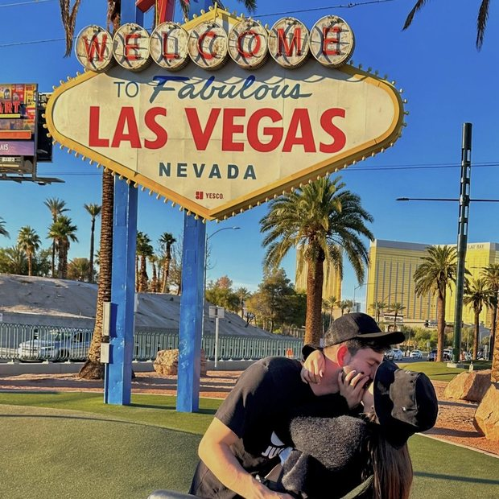
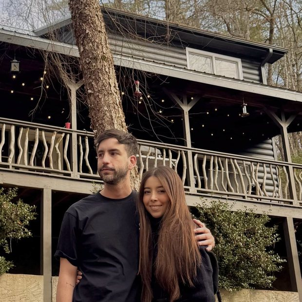
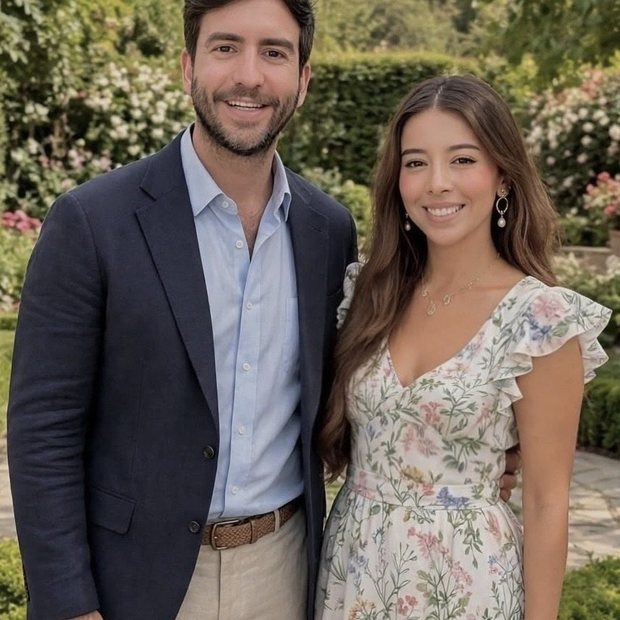

Nos casamos
Juan & Kat
Sábado 21 de noviembre de 2026
Yerbabuena, Chía · 2:00 de la tarde
Nos casamos
Sábado 21 de noviembre de 2026
Yerbabuena, Chía · 2:00 de la tarde
Lo esencial
Chía está a 2.564 m: de día hace sol y de noche baja a unos 10 °C. Trae algo de abrigo.
Nosotros
8 años de historia, una pandemia y mil historias que hoy nos llevan a dar el sí.



Y la pedida, en la playa. Ver el video completo →
Cómo va a ser el día
Siete horas, sin afán. Así se reparten.
Nos vemos pronto
Ya sabemos que vienes, y nos hace muchísima ilusión. Solo queda que llegue el día.
Sábado 21 de noviembre de 2026 · 2:00 p.m.
Lo que todos preguntan
La invitación es para las personas nombradas en ella. Si tienes dudas, escríbenos y lo miramos con gusto.
Sí. En la entrada te indican dónde dejar el carro.
El lugar es cubierto, así que la celebración no se moja. Aun así, te sugerimos llevar abrigo y sombrilla para el trayecto caminando.
Sí, son unos 40 minutos. Si piensas tomarte unos tragos, deja un conductor designado o pide un carro con tiempo — a esa hora y en esa zona escasean.
El blanco lo dejamos para la novia y el negro lo dejamos para otro día. De resto, la paleta está aquí y es una guía, no una regla.